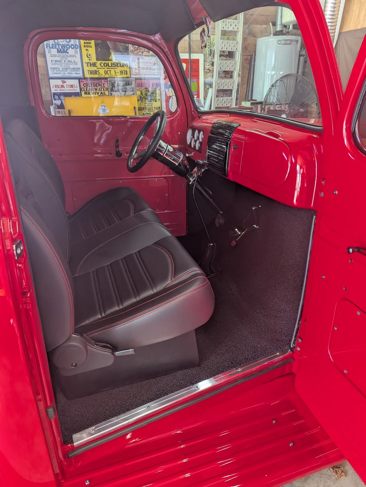
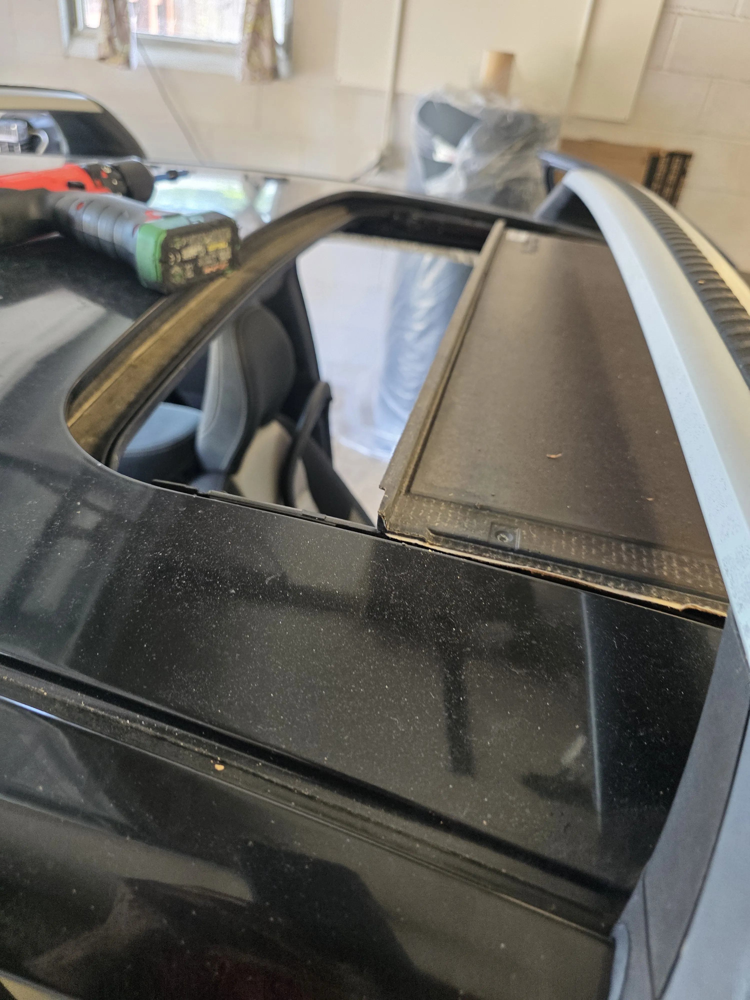
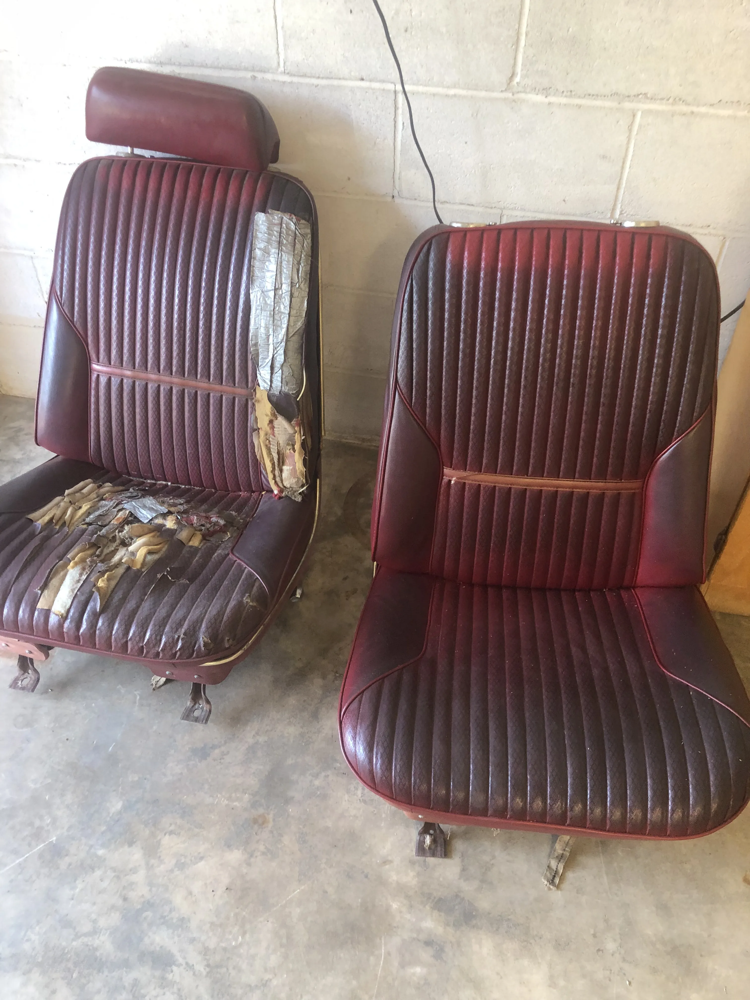
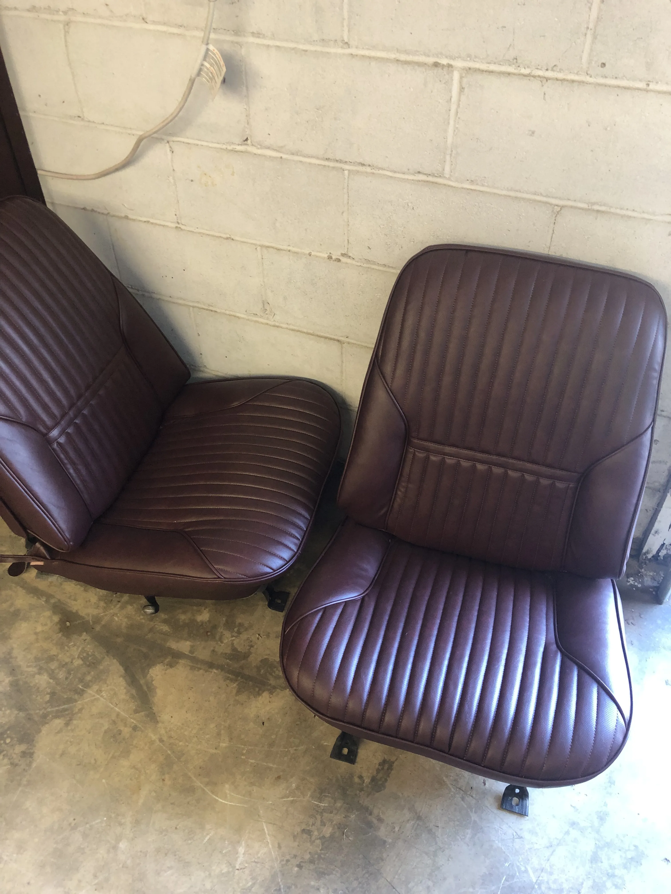
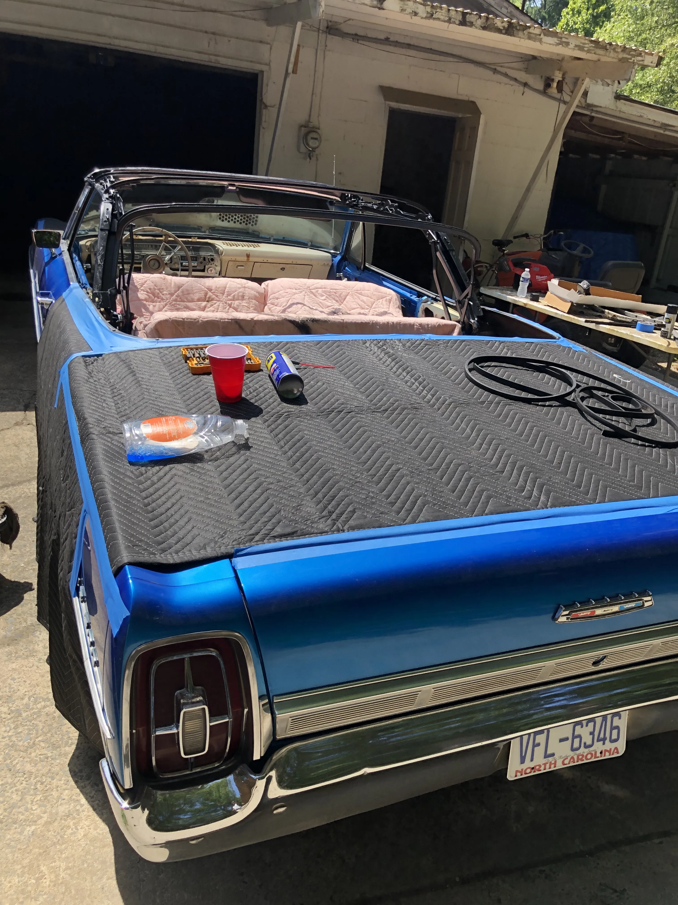
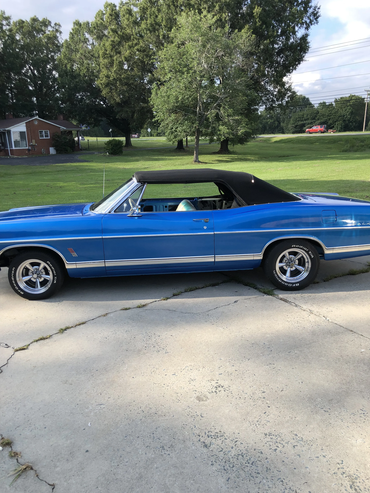

Custom upholstery, expertly crafted
Convertible tops, vinyl tops, sunroofs and vehicle interiors — handcrafted in Monroe since 1989.
Free estimates · By photo or in person · Union County


Expert upholstery solutions for every vehicle and vessel type
Most upholstery shops do cars. We have been doing boats, aircraft and bikes alongside them since 1989.
 Convertible tops
Convertible tops
Convertible Tops
Vinyl and canvas tops, heated glass and plastic windows, and the frame underneath.
See the work Vinyl tops
Vinyl tops
Vinyl Tops
Rotted, peeling or faded roof coverings stripped back and re-covered.
See the work
Vehicle interiorsVehicle Interiors
Custom upholstery, headliners, carpet replacement and full interior restorations.
See the work
SunroofsSunroofs
Sagging, torn or stuck sliding sunshades recovered, not replaced.
See the workThe work speaks first
A few recent jobs out of the Monroe shop.


The same job, twice
Four cars, photographed on the way in and on the way out.
 After
After
 After
After

After

After
Boats, aircraft and bikes come through here too
Boat seating, cushions, helm trim and canvas in materials chosen for sun and standing water; cockpit and cabin interiors for aircraft; and motorcycle seats recovered or reshaped for comfort. Same shop, same hands, same free estimate.


Trusted by customers for craftsmanship that lasts
★★★★★5 out of 5
5 days agoI had Auto Tops and Trim replace the headliner and center console leather in my 2008 Honda Accord. I was very happy with the quality of the work and would recommend using them.
★★★★★5 out of 5
a month agoFantastic service. The job was done quickly, while I waited. The price was cheaper than what most people were charging here locally.


★★★★★5 out of 5
8 months agoMr. Hopton restored my sunroof shade back to new condition. He even allowed me to watch the process. I recommend him 100% for all of your reupholstery needs. Thank you!
★★★★★5 out of 5
11 months agoExcellent work. We drove an hour to get our sunroof fixed and we were very happy with the service. Highly recommend!
★★★★★5 out of 5
a month agoExcellent service and great prices I'll take back my car all the time
★★★★★5 out of 5
6 months agoGreat auto shop
★★★★★5 out of 5
a year agoGood work
★★★★★5 out of 5
5 days agoI had Auto Tops and Trim replace the headliner and center console leather in my 2008 Honda Accord. I was very happy with the quality of the work and would recommend using them.
★★★★★5 out of 5
a month agoFantastic service. The job was done quickly, while I waited. The price was cheaper than what most people were charging here locally.
★★★★★5 out of 5
8 months agoMr. Hopton restored my sunroof shade back to new condition. He even allowed me to watch the process. I recommend him 100% for all of your reupholstery needs. Thank you!
★★★★★5 out of 5
11 months agoExcellent work. We drove an hour to get our sunroof fixed and we were very happy with the service. Highly recommend!
★★★★★5 out of 5
a month agoExcellent service and great prices I'll take back my car all the time
★★★★★5 out of 5
6 months agoGreat auto shop
★★★★★5 out of 5
a year agoGood work
Built on trust, quality, and long-term craftsmanship
Four reasons customers keep bringing their vehicles back to the same shop in Monroe.
Decades of upholstery experience
From daily drivers to specialty projects, we bring proven techniques and detail-focused execution to every interior.
Premium materials
We select durable, application-specific materials that hold up in real use while maintaining a clean, refined finish.
Honest pricing
Clear estimates, transparent recommendations, and no unnecessary upsells so you can make confident project decisions.
Custom interior solutions
Every build is tailored to your vehicle, style, and comfort goals, whether it is restoration work or a modern upgrade.
Ready to transform your interior?
Bring new life to your seats, tops, and trim with work built for comfort, durability, and long-term pride of ownership.
Free estimates · By photo or in person · Reply within one hour · Monroe, NC since 1989